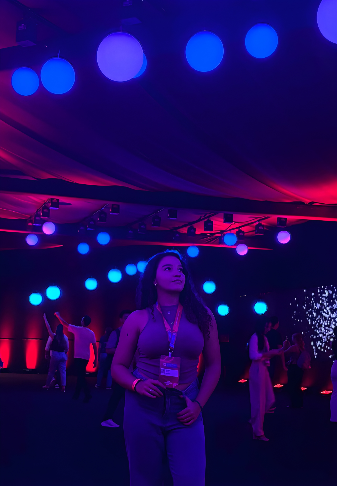

Sobre mim
Sou estudante de Análise e Desenvolvimento de Sistemas na Unifor (Universidade de
Fortaleza). Ao longo da minha graduação tenho contato com diferentes áreas do desenvolvimento,
incluindo back-end e aplicações full stack.
Além da área acadêmica, também sou responsável por um e-commerce,
experiência que reforçou meu interesse por design, organização visual
e experiência do usuário.
Por isso, tenho grande afinidade com o desenvolvimento front-end e com
a criação de interfaces claras, funcionais e visualmente agradáveis.
Conhecimentos
Tenho mais afinidade com o front-end e com o design de interfaces, porque gosto de pensar tanto na organização visual quanto na experiência de quem vai usar a página. Ao mesmo tempo, também desenvolvo conhecimentos em back-end e lógica de programação, o que me ajuda a ter uma visão mais completa das aplicações web.
Tecnologias que venho utilizando
Projetos
Principais projetos
Landing Page — Loja de Roupas Autoral
Landing page desenvolvida para uma loja de roupas autorais, com foco em design de interface, organização visual e publicação online utilizando Vercel.
2025Sistema de Estacionamento em Java
Aplicação em Java para controle de estacionamento, utilizando arquivos txt para registrar entradas, saídas e tickets.
2025Ebook — Fundamentos do Desenvolvimento Web
Ebook acadêmico sobre fundamentos do desenvolvimento web, abordando conceitos como front-end, back-end e autenticação.
2025